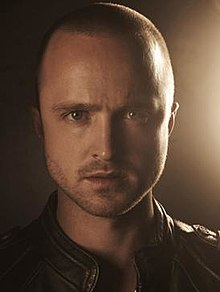
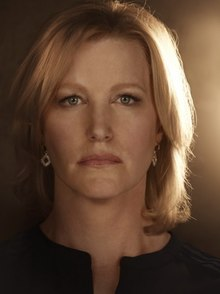
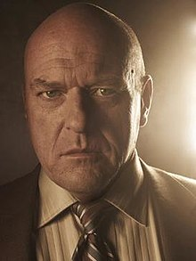
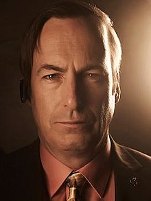
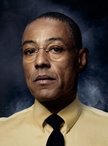

Walter Hartwell White Sr., also known by his clandestine alias Heisenberg, is a fictional character and the main protagonist of the American neo-Western crime drama television series Breaking Bad. He is portrayed by Bryan Cranston. Walter co-founded the company Gray Matter Technologies with his close friend Elliott Schwartz and his then-girlfriend Gretchen. He left Gray Matter abruptly, selling his shares for $5,000. Soon afterward, the company made a fortune, much of it from his research. Walt subsequently moved to Albuquerque, New Mexico, where he became a high school chemistry teacher. Breaking Bad begins on Walts 50th birthday, when he is diagnosed with Stage IIIA lung cancer. After this discovery, he resorts to manufacturing methamphetamine and drug dealing with his former student Jesse Pinkman (Aaron Paul) to ensure his familys financial security after his death. He is pulled deeper into the illicit drug trade, becoming more and more ruthless as the series progresses, and later adopts the alias Heisenberg, which becomes recognizable as the kingpin figure in the local drug trade.
Jesse Bruce Pinkman is a fictional character in the television series Breaking Bad, played by Aaron Paul. He is a crystal meth cook and dealer, and works with his former high school chemistry teacher, Walter White in a meth operation. Jesse Bruce Pinkman was born on September 14, 1984 into an upper middle-class family in Albuquerque, New Mexico. At the time the series starts, he has long been estranged from his parents due to his drug abuse and lifestyle as a drug dealer. After being forced to leave his parents residence, Jesse moved in with his Aunt Ginny, for whom he cared until her death from cancer. Afterward, he was allowed to stay in her home, the ownership of which fell to Jesses parents. Jesse was a poor student in high school and preferred hanging out with his friends and smoking marijuana to studying. Walt, whom Jesse almost always calls Mr. White, was his chemistry teacher and flunked Jesse in his class. Walt himself later says that he never thought Jesse would amount to much, although Jesses mother recalls that Walt must have seen some potential in Jesse; he really tried to motivate him. He was one of the few teachers who cared. Despite his poor academic standing, Jesse was able to graduate, with Walt present on stage when he received his diploma.
Skyler White is a fictional character in Breaking Bad, where she is portrayed by Anna Gunn. Over the years, Skyler has had several meager sources of income: working as a bookkeeper for the Albuquerque firm Beneke Fabricators, writing short stories and selling items on eBay. She and her husband, Walter White, have a son, Walt Jr., who has cerebral palsy, and an infant daughter, Holly. Her sister, Marie, is married to a DEA agent, Hank Schrader. Skyler is approximately 11 years younger than Walt, whom she met when she was a hostess at a diner near Walts former place of work, near the Los Alamos National Laboratory.

Walter Hartwell White Jr. is Walter and Skyler s teenage son and Hollys older brother. He has cerebral palsy, as manifested in speech difficulties and impaired motor control, for which he uses crutches. Angered by his parents constant fighting, Walter Jr. tries to establish an independent identity, insisting on being called Flynn and asking his best friend Louis to teach him how to drive. When he discovers that Walt has cancer, Walter Jr. changes his attitude and sets up a website, www.savewalterwhite.com, which requests and collects donations in an effort to help pay for Walts cancer treatment. Walts lawyer, Saul Goodman, arranges for a wave of fictional donations drawn from Walters drug money, in order to launder it and also make Walter Jr.s efforts appear successful.
Henry R. Schrader is Walt and Skylers brother-in-law and Maries husband, who works as a U.S. Drug Enforcement Administration (DEA) agent. He is involved in investigating a meth dealer known as Heisenberg, unaware for over a year that his prey is actually Walter. Hank has a cavalier exterior, but in reality the dark side of his job affects him more than he cares to admit. In the course of his work, Hank is promoted to El Paso, Texas from Albuquerque for a short time but experiences a traumatic event and moves back to Albuquerque. Despite his brashness, Hank is highly competent at his job and cares deeply about his family. Hank is eventually promoted to Assistant Special Agent in Charge of the DEA in Albuquerque but is still determined to solve the Heisenberg case, which ultimately leads to his demise.
Saul Goodman, real name James Jimmy Morgan McGill, is a sleazy lawyer who acts as Walter and Jesses attorney and provides some of the series comic relief. He uses the name Saul Goodman because he thinks his clients feel more confident with a Jewish lawyer; this name is also homophonous with the expression its all good, man Dressing in flashy suits, Saul maintains extensive connections within the criminal underworld and serves as a go-between connecting drug distributors, evidence removers, impersonators, and other criminals-for-hire. Despite his flamboyant appearance and mannerisms—punctuated by his outrageous low-budget TV commercials—Saul is a highly competent lawyer who is able to solve problems and find loopholes in order to protect his clients. He is also reluctant to be associated with violence or murder.
Gustavo Fring is the Chilean-born proprietor of Los Pollos Hermanos, a highly successful fried chicken restaurant chain. He is also a public booster for the local DEA office and a member of the hospital board. However, despite outward appearances, Gus is a major drug kingpin initially affiliated with the Mexican drug cartel in Ciudad Juárez, who uses his restaurants as a front for methamphetamine distribution throughout the American southwest. Like Walter White, Gus is a criminal who "hides in plain sight," using his anti-drug philanthropy to conceal his true nature.